大溪月列传（妖刀九传之二）(已解决)
#1 <font color="red">大溪月列传（妖刀九传之二）(已解决)</font> 作者：失落刀 发表时间：2008-11-7 22:41:08
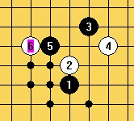
就是没有找到7在哪里，袜子呢？
［此帖子已被 失落刀 在 2010-9-26 10:33:45 编辑过］
#2 Re:大溪月一个理论应该败的6 作者：袜子破个洞 发表时间：2008-11-7 22:44:11
能说出你的理论依据吗。#3 Re:大溪月一个理论应该败的6 作者：失落刀 发表时间：2008-11-7 22:50:18
哈哈， 这个这个，也没啥理论，就是心里希望这个6败，就违心的希望有个胜7撒。
这个这个，也没啥理论，就是心里希望这个6败，就违心的希望有个胜7撒。
#4 Re:大溪月一个理论应该败的6 作者：失落刀 发表时间：2008-11-7 22:56:16
3左边的7有可能吗？#5 Re:大溪月一个理论应该败的6 作者：wrwak 发表时间：2008-11-8 16:30:51
这个4就是第二强防 我认为 有人说第三 其实他们说的第二强防 基本2打都必胜了
#6 Re:大溪月一个理论应该败的6 作者：wrwak 发表时间：2008-11-8 16:47:40
7手试试5上面#7 Re:大溪月一个理论应该败的6 作者：wrwak 发表时间：2008-11-8 19:35:06
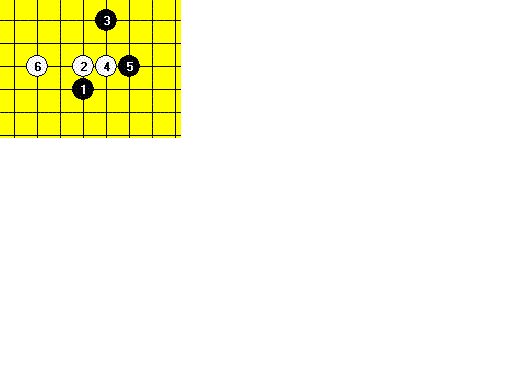#8 Re:大溪月一个理论应该败的6 作者：失落刀 发表时间：2008-11-15 0:14:49
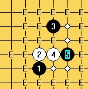
本图仅供8楼参考。
#9 Re:大溪月一个理论应该败的6 作者：失落刀 发表时间：2008-11-15 10:15:14
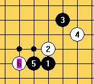 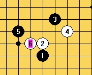
两个图，两个6.
#10 Re:大溪月一个理论应该败的6 作者：wrwak 发表时间：2008-11-15 12:15:27
这3个 黑棋胜
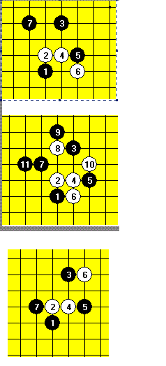#11 Re:大溪月一个理论应该败的6 作者：wrwak 发表时间：2008-11-15 12:24:54
8楼的图你给个最强下法吧#12 Re:大溪月一个理论应该败的6 作者：失落刀 发表时间：2008-11-15 13:08:25
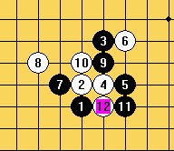#13 Re:大溪月一个理论应该败的6 作者：失落刀 发表时间：2008-11-15 13:22:49
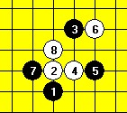#14 Re:大溪月一个理论应该败的6 作者：失落刀 发表时间：2008-11-15 13:29:24
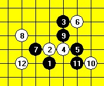#15 Re:大溪月一个理论应该败的6 作者：失落刀 发表时间：2008-11-15 13:32:17
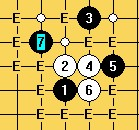#16 Re:大溪月一个理论应该败的6 作者：失落刀 发表时间：2008-11-15 13:33:44
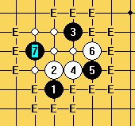#17 Re:大溪月列传（妖刀九传之二） 作者：木月 发表时间：2008-12-1 21:31:26
好象是6下面的7必胜，哎，老了，现在都不敢肯定的说鸟……
#18 Re:大溪月列传（妖刀九传之二） 作者：浪人痴痴 发表时间：2008-12-1 21:42:04
木老头.这个你不也地毯了吗?!~什么时候共享下啊!~#19 Re:大溪月列传（妖刀九传之二） 作者：陨落之城 发表时间：2008-12-11 18:56:03
 这个9对吗？
这个9对吗？
#20 Re:大溪月列传（妖刀九传之二） 作者：陨落之城 发表时间：2008-12-11 18:58:53
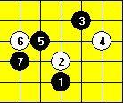还有这个7怎么样？有用不？
#21 Re:大溪月列传（妖刀九传之二） 作者：疏星终结 发表时间：2008-12-11 19:17:05
图片不能显示哦
#22 Re:大溪月列传（妖刀九传之二） 作者：失落刀 发表时间：2008-12-11 19:44:21
21楼的的7难杀这个8.
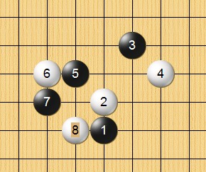#23 Re:大溪月列传（妖刀九传之二） 作者：陨落之城 发表时间：2008-12-16 21:13:22
=======上图对应的爱五子棋谱代码如下，以便你拆解：========
h8h9i11g10i8g8i10i9g9
======================================================
想问下，这9手对吗??
对的话，白10的强防还有吗？
#24 Re:大溪月列传（妖刀九传之二） 作者：26 发表时间：2008-12-17 0:00:31
24楼的9正确，我没有遇到强防。你仔细拆解下。#25 Re:Re:大溪月列传（妖刀九传之二） 作者：nara 发表时间：2008-12-17 19:08:19
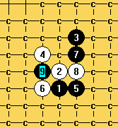
回24楼,这个9应该必胜的.
#26 Re:大溪月列传（妖刀九传之二） 作者：陨落之城 发表时间：2008-12-17 21:16:46
哦， 好的 ， 谢谢 楼上两位。#27 Re:大溪月列传（妖刀九传之二） 作者：陨落之城 发表时间：2008-12-17 23:11:43
=======上图对应的爱五子棋谱代码如下，以便你拆解：========
h8h9i11g9i9j10i10i8g11
======================================================
关于这个9的问题？ 接下来黑能必胜吗？
#28 Re:大溪月列传（妖刀九传之二） 作者：没定式随便下 发表时间：2010-3-2 9:21:10
楼上的9手必不了吧？同问LZ的问题，下面这个6哪个7比较好？除了必一打胜的5外，其余的5哪个能胜呢？
=======上图对应的爱五子棋谱代码如下，以便你拆解：========
h8h9i11j10g10f10
======================================================
#29 Re:大溪月列传（妖刀九传之二） 作者：越狱行辕 发表时间：2010-3-3 21:26:29
饿 送几个馅饼.在网吧 不能发谱 不过发的 一定是 地毯的图
=======上图对应的爱五子棋谱代码如下，以便你拆解：========
h8h9i11i9j9j8g11f11h12
======================================================
=======上图对应的爱五子棋谱代码如下，以便你拆解：========
h8h9i11i9j9i8g10h11h12j10f10
======================================================
=======上图对应的爱五子棋谱代码如下，以便你拆解：========
h8h9i11i9j9i8g10h11h12g12f10h10j10k9j8j11e11
======================================================
=======上图对应的爱五子棋谱代码如下，以便你拆解：========
h8h9i11i9j9i8g10g11h10i10j12k13f9f10e8d7e9
======================================================
=======上图对应的爱五子棋谱代码如下，以便你拆解：========
h8h9i11i9j9i8g10g11h10i10j12k13f9i7i6e8g7
======================================================
=======上图对应的爱五子棋谱代码如下，以便你拆解：========
h8h9i11i9j9i8g10j11g9
======================================================
以上每个图都经过地毯 确认无误，，用终结者应该 一扫就扫出来了 ，强一点的点 上面都有
#30 Re:大溪月列传（妖刀九传之二） 作者：逆刃 发表时间：2010-3-3 21:37:11
LS发的4其实已经地毯了，最强的6是5上面的那个。#31 Re:大溪月列传（妖刀九传之二） 作者：越狱行辕 发表时间：2010-3-3 21:40:13
额 我只能终结那几个简单的 呵呵#32 Re:大溪月列传（妖刀九传之二） 作者：逆刃 发表时间：2010-3-7 9:40:08
28楼的那个6是次强4里的最强的6，黑棋有很多7都有局部优势，但是都很难必胜，原因就在于白棋的棋型，确实很有利于防守，下面这个7我觉得还不错，有兴趣的可以一试。
=======上图对应的爱五子棋谱代码如下，以便你拆解：========
h8h9i11j10g10f10f7
======================================================
#33 Re:大溪月列传（妖刀九传之二） 作者：逆刃 发表时间：2010-3-16 14:12:26
经证实，下面这个7可以必胜。
=======上图对应的爱五子棋谱代码如下，以便你拆解：========
h8h9i11j10g10f10i9
======================================================
［ 失落刀 于 2010-3-16 21:46:29 时奖励此帖[金币加 20 威望加1］
#34 Re:大溪月列传（妖刀九传之二） 作者：潜龙勿用吉 发表时间：2010-4-5 10:18:37
=======上图对应的爱五子棋谱代码如下，以便你拆解：========
h8h9i11g9j11g10i8g8g11h11i9i10h10g7g6j8f9h6j9h7i7i5f8h12f7f10j12j13
======================================================
=======上图对应的爱五子棋谱代码如下，以便你拆解：========
h8h9i11g9j11g10i8g8g11h11i9i10h10g7g6j8f9h6j9h7i7i5f8h12f7f10j12l11
======================================================
前面走的对吗？对的怎么杀啊，错了错在哪里？
#35 Re:大溪月列传（妖刀九传之二） 作者：茗弈宽容 发表时间：2010-4-5 12:10:37
=======上图对应的爱五子棋谱代码如下，以便你拆解：========
h8h9i11g9j11g10i8g8g11h11i9i10h10g7g6j8f9h6j9h7i7i5f8h12l11
======================================================这个25杀
#36 Re:大溪月列传（妖刀九传之二） 作者：潜龙勿用吉 发表时间：2010-4-14 18:56:39
=======上图对应的爱五子棋谱代码如下，以便你拆解：========
h8h9i11g9j11g10i8g8g11h11i9i10h10g7g6j8f9h6j9h7i7i5f8i12
======================================================请问这个24
=======上图对应的爱五子棋谱代码如下，以便你拆解：========
h8h9i11g9j11g10i8g8g11h11i9i10h10g7g6j8f9h6j9h7i7i5f8i12j13
======================================================这个25对吗？